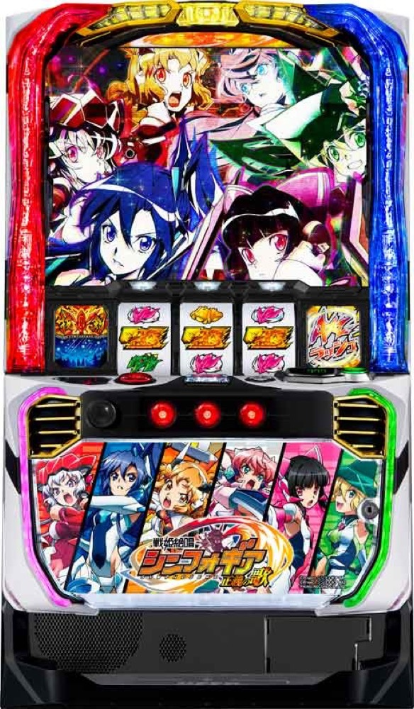

Lパチスロ 戦姫絶唱シンフォギア 正義の歌
AXZバトルからギアVアタックを重ね、絶唱とAXZラッシュ黄金へ。
- 導入
- 2024年7月
- メーカー
- SANKYO
- 分類
- パチスロ
主要スペック
約65%のAXZバトルから純増約2.8枚/GのAXZラッシュへ。初期ゲーム数決定、規定獲得枚数ごとのギアVチャンス、キャラ別ギアVアタック、絶唱、純増約5.0枚/GのAXZラッシュ黄金、絶唱バトルまでを実機順に体験できます。
- AXZバトル成功期待度約65%
- AXZラッシュは初期40G以上・純増約2.8枚/G
- 絶唱バトル約60%・上位純増約5.0枚/G
Lパチスロ 戦姫絶唱シンフォギア 正義の歌の見どころと計算条件
約65%のAXZバトルから純増約2.8枚/GのAXZラッシュへ。初期ゲーム数決定、規定獲得枚数ごとのギアVチャンス、キャラ別ギアVアタック、絶唱、純増約5.0枚/GのAXZラッシュ黄金、絶唱バトルまでを実機順に体験できます。
スマスロ シンフォギアを数字で早分かり
残りゲーム数、ギアVチャンスの装者獲得、キャラ別ギアVアタック、絶唱、上位ATと絶唱バトルを個別に記録します。
30秒で分かるスマスロ シンフォギア
初期40G以上のAXZラッシュで規定獲得枚数ごとのギアVチャンスを重ね、絶唱から純増約5.0枚/Gの黄金ATループを目指す台です。
こんな遊び方に向いている
- 残りゲーム数を減らしながら装者獲得を狙いたい
- 5種類のギアVアタックをPUSHで見たい
- 絶唱バトルから上位AT復帰を狙いたい
遊ぶ前に確認したいこと
- AT初当り・純増・主要ゲーム数と平均値は公開値
- 装者別獲得率など非公表部分は代表値
- 旧6区間の汎用STフローは廃止
AXZバトルと最終決戦
通常時はAXZバトルや最終決戦からATを目指します。AXZバトルの成功期待度は約65%。最終決戦は5戦のバトルでVストックを狙い、ATとギアVチャンスが濃厚となる上位CZです。
設定別AT初当りは公開値を使用し、CZ発生率はAT初当りと約65%の突破率から逆算した比較用の簡易値です。通常時のモード・天井・小役別抽選は初当りへまとめています。
AXZラッシュとギアVチャンス
AXZラッシュは純増約2.8枚/Gのゲーム数管理ATです。開始時の『わたしは歌でぶん殴るッ！』で40G以上の初期ゲーム数を決めます。
獲得50枚・100枚、その後は100枚ごとの節目でギアVチャンスを抽選。響、翼、クリス、マリア、調＆切歌の装者を獲得すると、キャラごとのギアVアタックでゲーム数を上乗せします。5人獲得時はEXルートへ進みます。
絶唱とAXZラッシュ黄金
絶唱は5G＋α、毎ゲーム10G以上を上乗せし、平均約100Gを獲得してAXZラッシュ黄金へ進みます。通常ATの1000・1500・2000・2500枚到達時にも上位移行を抽選し、2500枚到達時は上位濃厚です。
AXZラッシュ黄金は純増約5.0枚/G。AXZ目停止からゲーム数上乗せまたはシンフォギアBONUSを抽選します。終了後は勝利期待度約60%の絶唱バトルへ進み、勝利すると絶唱を経由して上位ATへ復帰します。
黄金絶唱と簡略化する範囲
上位ループ中の一部は黄金絶唱へ進み、平均約360Gの上乗せを獲得します。サイトでは通常の絶唱と分け、PUSHで結果を開きます。
ギアVチャンスの装者別獲得率、通常AT中の契機出現率、1000・1500・2000枚到達時の上位移行率など非公表部分は、公開されているゲーム性と平均値を崩さない体験用代表値です。
固定条件と収支
- 約31.7G/50枚・1,000円46枚貸し・5.2枚交換で固定
- 設定1・2・4・5・6から均等抽選し、設定3は選択しない
- 上乗せゲーム数と獲得枚数を別表示
- 19,000枚到達時はコンプリート表示
平均Gと投資目安の計算
掲載するAXZラッシュ初当り約1/295.2は設定1基準です。当サイトでは50枚あたり31.7G、1,000円46枚貸しの固定条件から、設定1基準の平均投資目安を約10,100円と計算します。
シミュレーターでは設定1・2・4・5・6を均等抽選します。設定1・2・4・5・6で公開されている初当り値を個別に使います。公開されていない特化ゾーン・上位到達率の設定差は加えません。 換金は5.2枚交換で固定し、結果とランキングに設定を表示します。
シミュレーション結果の見方
当るまでAXZバトル・AXZラッシュまでのゲーム数
設定設定1・2・4・5・6から抽選された今回の設定
上位到達絶唱バトルとAXZラッシュ 黄金への到達
最終収支差枚と5.2枚交換の収支目安
結果は自動で「マイ記録」に保存され、同じ機種を何回試したか、最高収支、勝率をあとから確認できます。
簡易シミュレーターについて
AXZバトル・AXZラッシュ・AXZラッシュ 黄金の流れを固定条件で体験できます。JavaScriptを有効にすると、この位置にシミュレーター、演出、マイ記録、機種別ランキングが表示されます。
結果は娯楽・確率理解のための参考表示です。金銭的価値や交換価値はなく、実際の勝敗や収支を保証しません。18歳未満の方の利用はお控えください。
スマスロ シンフォギアのよくある質問
スマスロ シンフォギアはどんな台？
約65%のAXZバトルから純増約2.8枚/GのAXZラッシュへ。 AXZバトル成功期待度約65%が主な確認ポイントです。
スマスロ シンフォギアの平均投資目安は？
設定1基準のAXZラッシュ初当り約1/295.2と、50枚あたり31.7G・46枚貸しの固定条件から、平均10,100円を目安として表示します。実際の設定や遊技状況で結果は変わります。
設定とゲームの流れはどう抽選する？
開始時に設定1・2・4・5・6から1つを均等抽選し、AXZバトル、AXZラッシュ、絶唱バトル、AXZラッシュ 黄金の順で到達を判定します。設定は最終結果とランキングに表示します。
収支はどう計算する？
1,000円46枚貸し・5.2枚交換の固定条件で投資、換金、収支目安を計算します。実店舗の再プレイ、持ちメダル、端数処理は含みません。